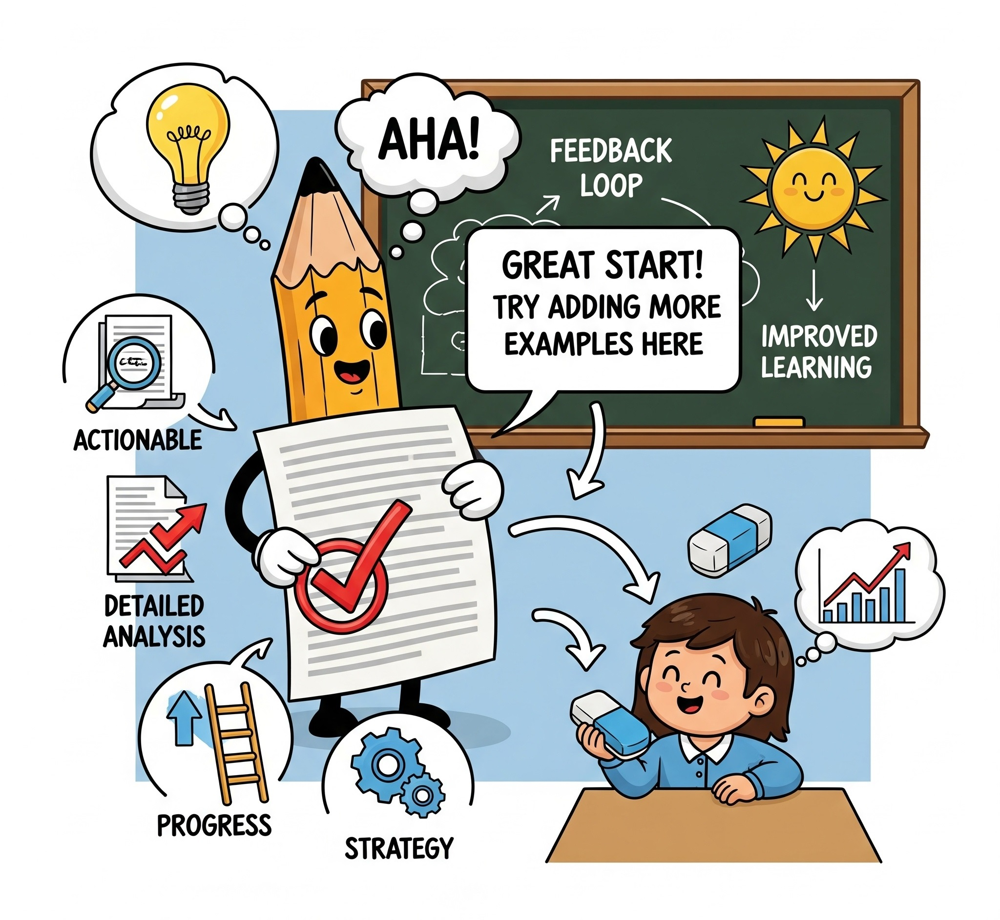
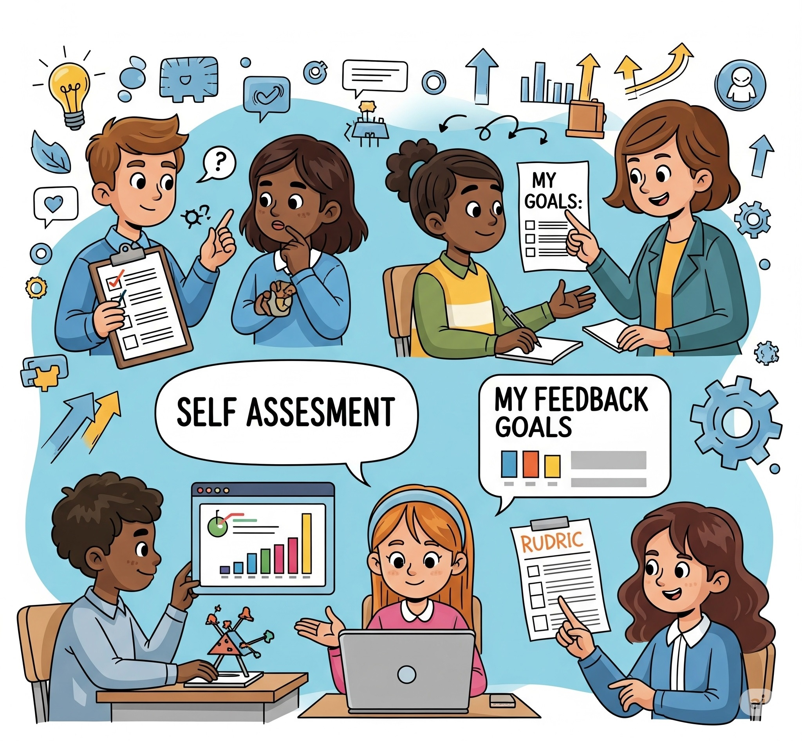
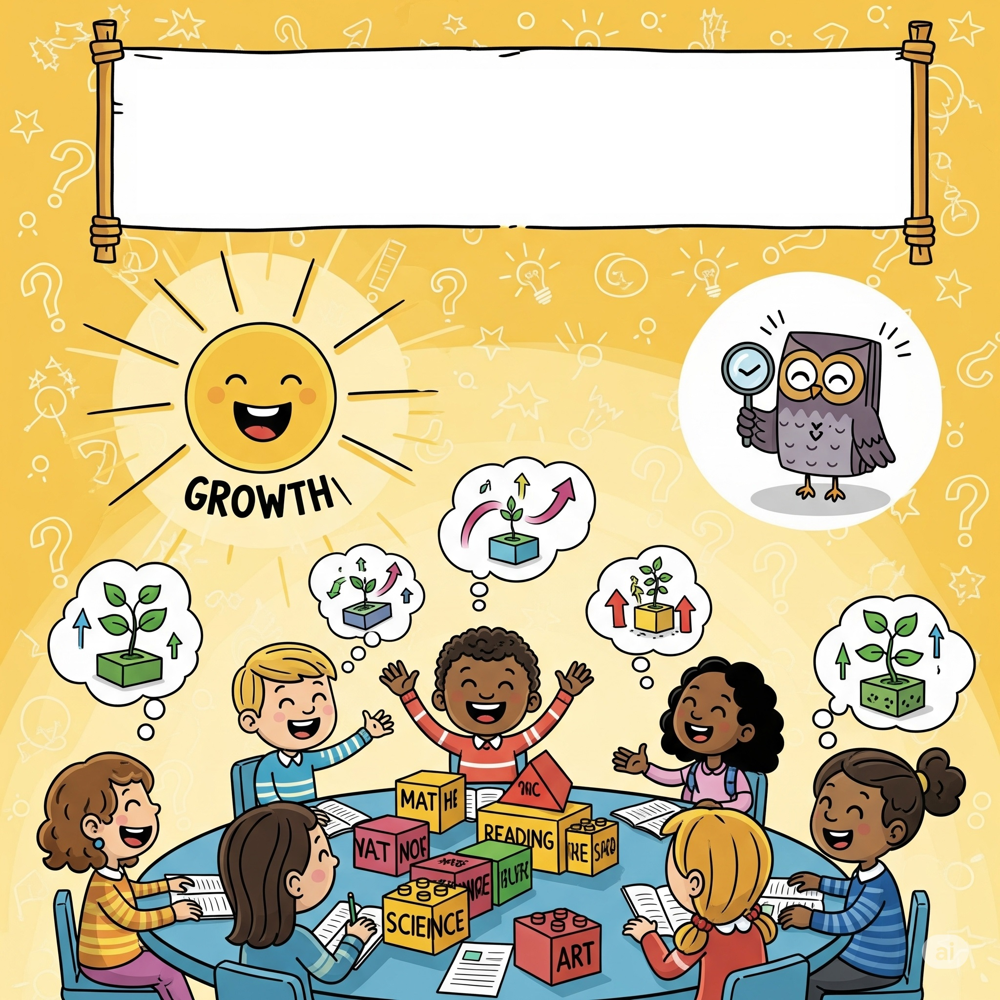
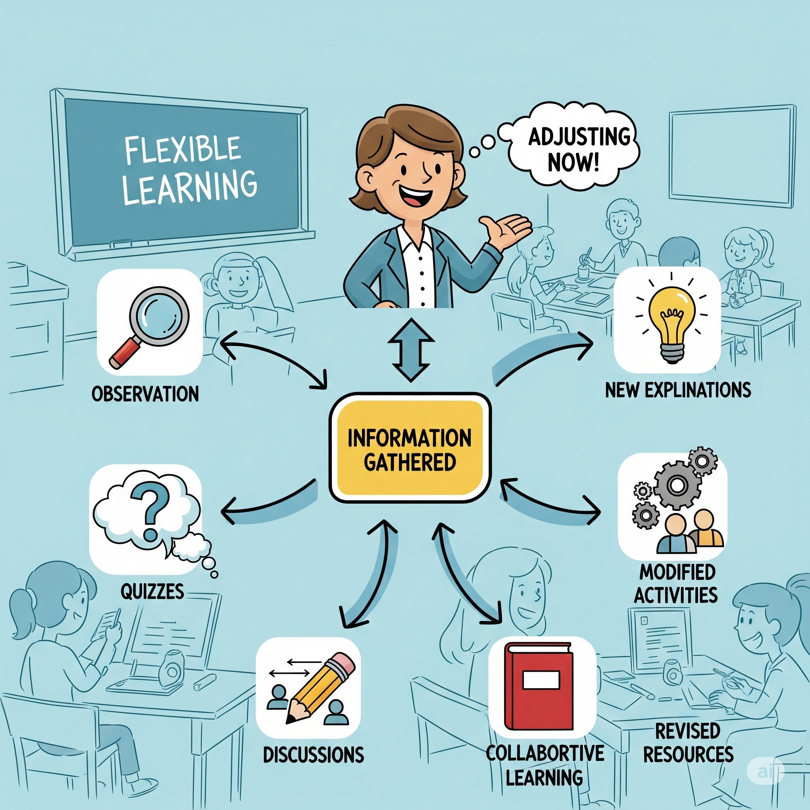
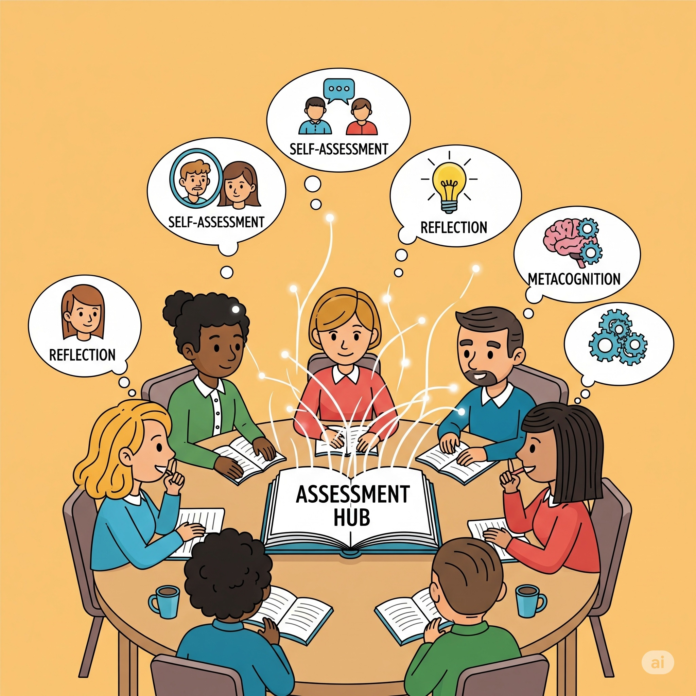
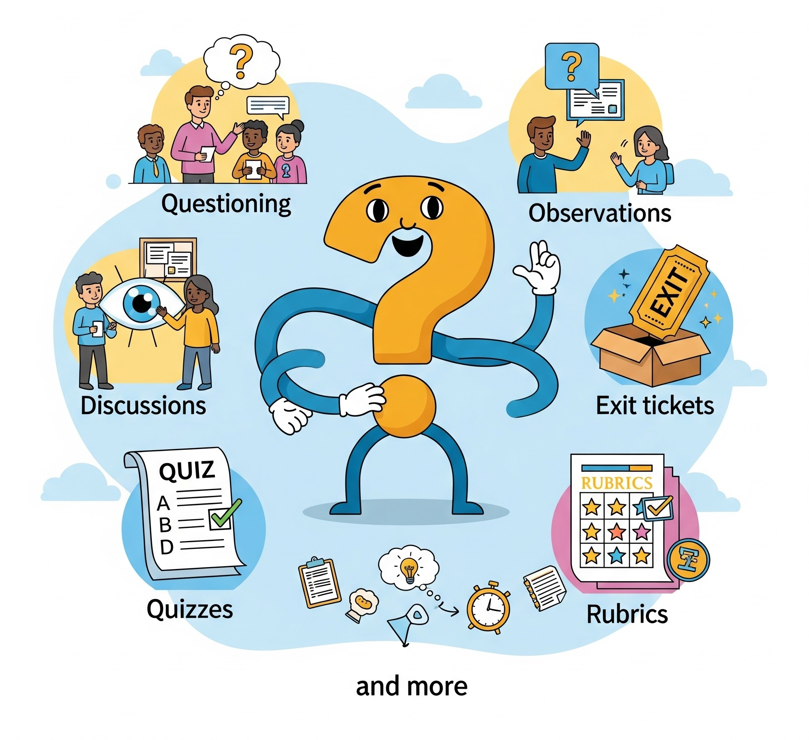
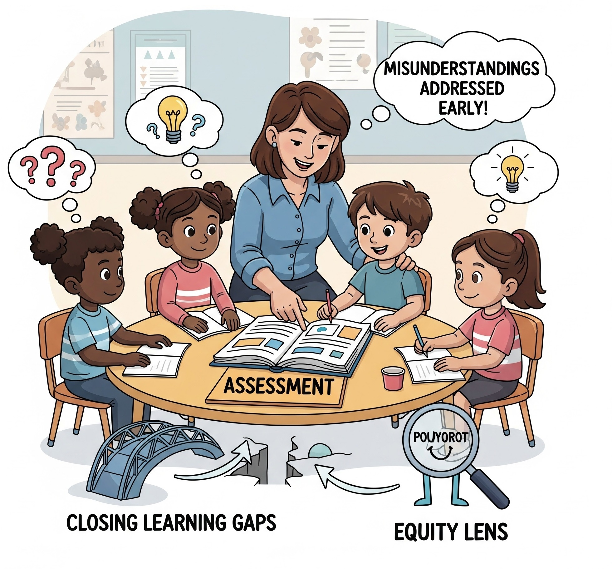
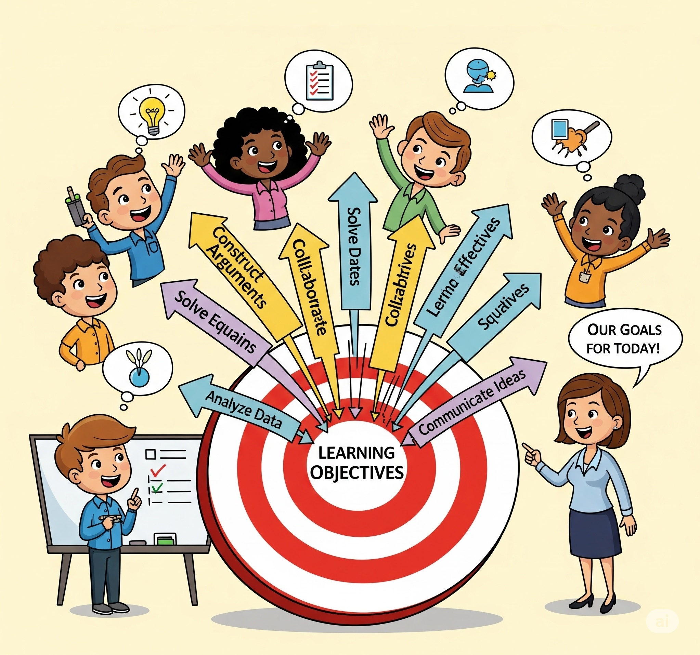
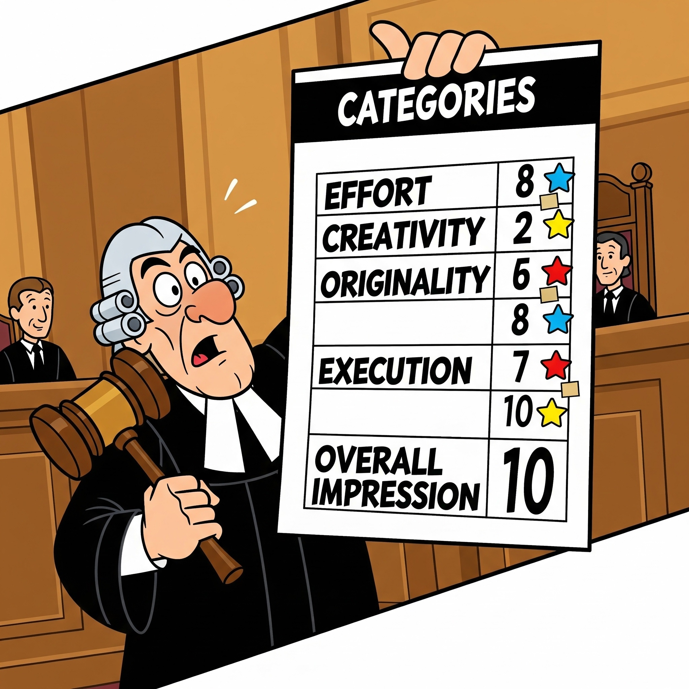

Happens during instruction, not at the end. Πραγματοποιείται κατά τη διάρκεια της διδασκαλίας, όχι στο τέλος. Se déroule pendant l'enseignement, pas à la fin. Findet während des Unterrichts statt, nicht am Ende.
Formative Assessment Διαμορφωτική Αξιολόγηση Évaluation Formative Formative Bewertung
Ongoing & Continuous
Συνεχής & Διαρκής
Continue et en cours
Laufend & kontinuierlich
Embedded in Teaching
Ενσωματωμένη στη Διδασκαλία
Intégrée à l'enseignement
In den Unterricht eingebettet
Integrated into daily classroom activities, not separate from instruction. Εντάσσεται στις καθημερινές δραστηριότητες της τάξης, δεν είναι ξεχωριστή από τη διδασκαλία. Fait partie des activités quotidiennes en classe, n'est pas séparée de l'enseignement. In die täglichen Unterrichtsaktivitäten integriert, nicht vom Unterricht getrennt.

Feedback-Driven
Καθοδηγούμενη από Ανατροφοδότηση
Axée sur le feedback
Feedback-gesteuert
Provides specific, actionable feedback that helps improve learning. Παρέχει συγκεκριμένη, πρακτική ανατροφοδότηση που βοηθά στη βελτίωση της μάθησης. Fournit des commentaires spécifiques et exploitables qui aident à améliorer l'apprentissage. Liefert spezifisches, umsetzbares Feedback, das zur Verbesserung des Lernens beiträgt.

Student-Centered
Μαθητοκεντρική
Centrée sur l'étudiant
Schülerzentriert
Involves students in understanding goals, assessing their own learning, and using feedback to improve. Συμμετέχουν οι μαθητές στην κατανόηση των στόχων, στην αξιολόγηση της δικής τους μάθησης και στη χρήση της ανατροφοδότησης για βελτίωση. Implique les étudiants dans la compréhension des objectifs, l'évaluation de leur propre apprentissage et l'utilisation du feedback pour s'améliorer. Bezieht die Schüler in das Verständnis der Ziele, die Bewertung ihres eigenen Lernens und die Nutzung von Feedback zur Verbesserung ein.

Low Stakes
Χαμηλού Ρίσκου
À faible enjeu
Niedriger Einsatz
Not used for grades; focus is on growth and improvement. Δεν χρησιμοποιείται για βαθμολογία· η έμφαση δίνεται στην ανάπτυξη και τη βελτίωση. Non utilisée pour les notes; l'accent est mis sur la croissance et l'amélioration. Wird nicht für Noten verwendet; der Fokus liegt auf Wachstum und Verbesserung.

Adaptable
Προσαρμόσιμη
Adaptable
Anpassungsfähig
Information gathered is used immediately to adjust teaching strategies. Οι πληροφορίες που συλλέγονται χρησιμοποιούνται άμεσα για την προσαρμογή των διδακτικών στρατηγικών. Les informations recueillies sont utilisées immédiatement pour ajuster les stratégies d'enseignement. Die gesammelten Informationen werden sofort zur Anpassung der Lehrstrategien verwendet.

Collaborative
Συνεργατική
Collaborative
Kollaborativ
Encourages peer and self-assessment to promote reflection and metacognition. Ενθαρρύνει την αξιολόγηση από ομοτίμους και την αυτοαξιολόγηση για την προώθηση του αναστοχασμού και της μεταγνώσης. Encourage l'évaluation par les pairs et l'auto-évaluation pour promouvoir la réflexion et la métacognition. Fördert die Peer- und Selbstbewertung, um Reflexion und Metakognition zu fördern.

Flexible in Format
Ευέλικτη στη Μορφή
Format flexible
Flexibel im Format
Can include questioning, discussions, observations, exit tickets, quizzes, rubrics, and more. Μπορεί να περιλαμβάνει ερωτήσεις, συζητήσεις, παρατηρήσεις, δελτία εξόδου, κουίζ, ρουμπρίκες και άλλα. Peut inclure des interrogations, des discussions, des observations, des tickets de sortie, des quiz, des grilles d'évaluation, etc. Kann Befragungen, Diskussionen, Beobachtungen, Exit-Tickets, Quiz, Rubriken und mehr umfassen.

Equity-Focused
Εστιασμένη στην Ισότητα
Axée sur l'équité
Gerechtigkeitsorientiert
Helps close learning gaps by addressing misunderstandings early. Βοηθά στο κλείσιμο των μαθησιακών κενών αντιμετωπίζοντας έγκαιρα τις παρεξηγήσεις. Aide à combler les lacunes d'apprentissage en abordant les malentendus à un stade précoce. Hilft, Lernlücken zu schließen, indem Missverständnisse frühzeitig behoben werden.

Goal-Oriented
Προσανατολισμένη στο Στόχο
Axée sur les objectifs
Zielorientiert
Based on clearly defined learning objectives shared with students. Βασίζεται σε σαφώς καθορισμένους μαθησιακούς στόχους που μοιράζονται με τους μαθητές. Basée sur des objectifs d'apprentissage clairement définis et partagés avec les étudiants. Basiert auf klar definierten Lernzielen, die den Schülern mitgeteilt werden.
Summative Assessment Αθροιστική Αξιολόγηση Évaluation Sommative Summative Bewertung
Evaluates Learning at the End of a Unit/Period
Αξιολογεί τη Μάθηση στο Τέλος μιας Ενότητας/Περιόδου
Évalue l'apprentissage à la fin d'une unité/période
Bewertet das Lernen am Ende einer Einheit/Periode
Summative assessments are typically given at the conclusion of a significant learning period, such as the end of a unit, chapter, course, or academic year. Οι αθροιστικές αξιολογήσεις δίνονται συνήθως στο τέλος μιας σημαντικής περιόδου μάθησης, όπως το τέλος μιας ενότητας, κεφαλαίου, μαθήματος ή ακαδημαϊκού έτους. Les évaluations sommatives sont généralement administrées à la fin d'une période d'apprentissage significative, comme la fin d'une unité, d'un chapitre, d'un cours ou d'une année académique. Summative Bewertungen werden in der Regel am Ende eines bedeutenden Lernabschnitts durchgeführt, wie z.B. am Ende einer Einheit, eines Kapitels, eines Kurses oder eines akademischen Jahres.

Measures Overall Achievement
Μετρά τη Συνολική Επίδοση
Mesure la réussite globale
Misst die Gesamtleistung
Their primary purpose is to evaluate what students have learned and mastered over a period of time. Ο κύριος σκοπός τους είναι να αξιολογήσουν τι έχουν μάθει και κατακτήσει οι μαθητές σε μια χρονική περίοδο. Leur objectif principal est d'évaluer ce que les étudiants ont appris et maîtrisé sur une période donnée. Ihr Hauptzweck besteht darin, zu bewerten, was die Schüler über einen bestimmten Zeitraum gelernt und gemeistert haben.
High Stakes
Υψηλού Ρίσκου
À fort enjeu
Hoher Einsatz
The results of summative assessments often carry significant weight and are used for grading. They are generally considered "high stakes" because they determine a student's final performance. Τα αποτελέσματα των αθροιστικών αξιολογήσεων έχουν συχνά σημαντική βαρύτητα και χρησιμοποιούνται για βαθμολόγηση. Θεωρούνται γενικά "υψηλού ρίσκου" επειδή καθορίζουν την τελική επίδοση ενός μαθητή. Les résultats des évaluations sommatives ont souvent un poids important et sont utilisés pour la notation. Ils sont généralement considérés comme "à fort enjeu" car ils déterminent la performance finale d'un étudiant. Die Ergebnisse summativer Bewertungen haben oft ein erhebliches Gewicht und werden zur Benotung verwendet. Sie gelten allgemein als "hoher Einsatz", da sie die endgültige Leistung eines Schülers bestimmen.
Retrospective
Αναδρομική
Rétrospective
Rückblickend
They look back at what has been taught and learned, rather than focusing on ongoing learning. Εξετάζουν αναδρομικά τι έχει διδαχθεί και μαθευτεί, αντί να εστιάζουν στη συνεχιζόμενη μάθηση. Elles portent sur ce qui a été enseigné et appris, plutôt que sur l'apprentissage en cours. Sie blicken auf das zurück, was gelehrt und gelernt wurde, anstatt sich auf das laufende Lernen zu konzentrieren.
Standardized (Often)
Τυποποιημένη (Συχνά)
Standardisée (souvent)
Standardisiert (oft)
While not exclusively, summative assessments are often standardized tests to ensure consistency and comparability. Αν και όχι αποκλειστικά, οι αθροιστικές αξιολογήσεις είναι συχνά τυποποιημένα τεστ για να διασφαλιστεί η συνέπεια και η συγκρισιμότητα. Bien que non exclusivement, les évaluations sommatives sont souvent des tests standardisés pour garantir la cohérence et la comparabilité. Obwohl nicht ausschließlich, sind summative Bewertungen oft standardisierte Tests, um Konsistenz und Vergleichbarkeit zu gewährleisten.
Individualized Performance
Ατομική Επίδοση
Performance individuelle
Individuelle Leistung
They typically focus on individual student performance rather than collaborative learning. Συνήθως εστιάζουν στην ατομική επίδοση του μαθητή παρά στη συνεργατική μάθηση. Elles se concentrent généralement sur la performance individuelle de l'étudiant plutôt que sur l'apprentissage collaboratif. Sie konzentrieren sich in der Regel auf die individuelle Schülerleistung und nicht auf das kollaborative Lernen.
Less Frequent
Λιγότερο Συχνή
Moins fréquente
Weniger häufig
Compared to formative assessments, summative assessments are administered less frequently. Σε σύγκριση με τις διαμορφωτικές αξιολογήσεις, οι αθροιστικές αξιολογήσεις διεξάγονται λιγότερο συχνά. Comparées aux évaluations formatives, les évaluations sommatives sont administrées moins fréquemment. Im Vergleich zu formativen Bewertungen werden summative Bewertungen seltener durchgeführt.
Provides a "Snapshot"
Παρέχει ένα "Στιγμιότυπο"
Fournit un "instantané"
Bietet eine "Momentaufnahme"
They offer a snapshot of a student's knowledge and skills at a specific point in time. Προσφέρουν ένα στιγμιότυπο των γνώσεων και των δεξιοτήτων ενός μαθητή σε μια συγκεκριμένη χρονική στιγμή. Elles offrent un aperçu des connaissances et des compétences d'un étudiant à un moment précis. Sie bieten eine Momentaufnahme des Wissens und der Fähigkeiten eines Schülers zu einem bestimmten Zeitpunkt.

Limited Immediate Feedback
Περιορισμένη Άμεση Ανατροφοδότηση
Feedback immédiat limité
Begrenztes sofortiges Feedback
Feedback is usually to inform the student of their final grade, not to guide immediate instructional adjustments. Any feedback given would be for future learning. Η ανατροφοδότηση συνήθως σκοπό έχει να ενημερώσει τον μαθητή για τον τελικό του βαθμό, όχι να καθοδηγήσει άμεσες διδακτικές προσαρμογές. Οποιαδήποτε ανατροφοδότηση δίνεται αφορά τη μελλοντική μάθηση. Le feedback vise généralement à informer l'étudiant de sa note finale, pas à guider des ajustements pédagogiques immédiats. Tout feedback donné serait pour l'apprentissage futur. Das Feedback dient in der Regel dazu, den Schüler über seine Endnote zu informieren, nicht um sofortige Unterrichtsanpassungen zu leiten. Jedes gegebene Feedback wäre für zukünftiges Lernen.
Accountability
Λογοδοσία
Responsabilisation
Rechenschaftspflicht
They are often used for accountability purposes, such as evaluating the effectiveness of a curriculum, a teacher, or a school. Χρησιμοποιούνται συχνά για σκοπούς λογοδοσίας, όπως η αξιολόγηση της αποτελεσματικότητας ενός προγράμματος σπουδών, ενός εκπαιδευτικού ή ενός σχολείου. Elles sont souvent utilisées à des fins de reddition de comptes, comme l'évaluation de l'efficacité d'un programme, d'un enseignant ou d'une école. Sie werden oft zu Rechenschaftszwecken verwendet, wie z.B. zur Bewertung der Wirksamkeit eines Lehrplans, eines Lehrers oder einer Schule.